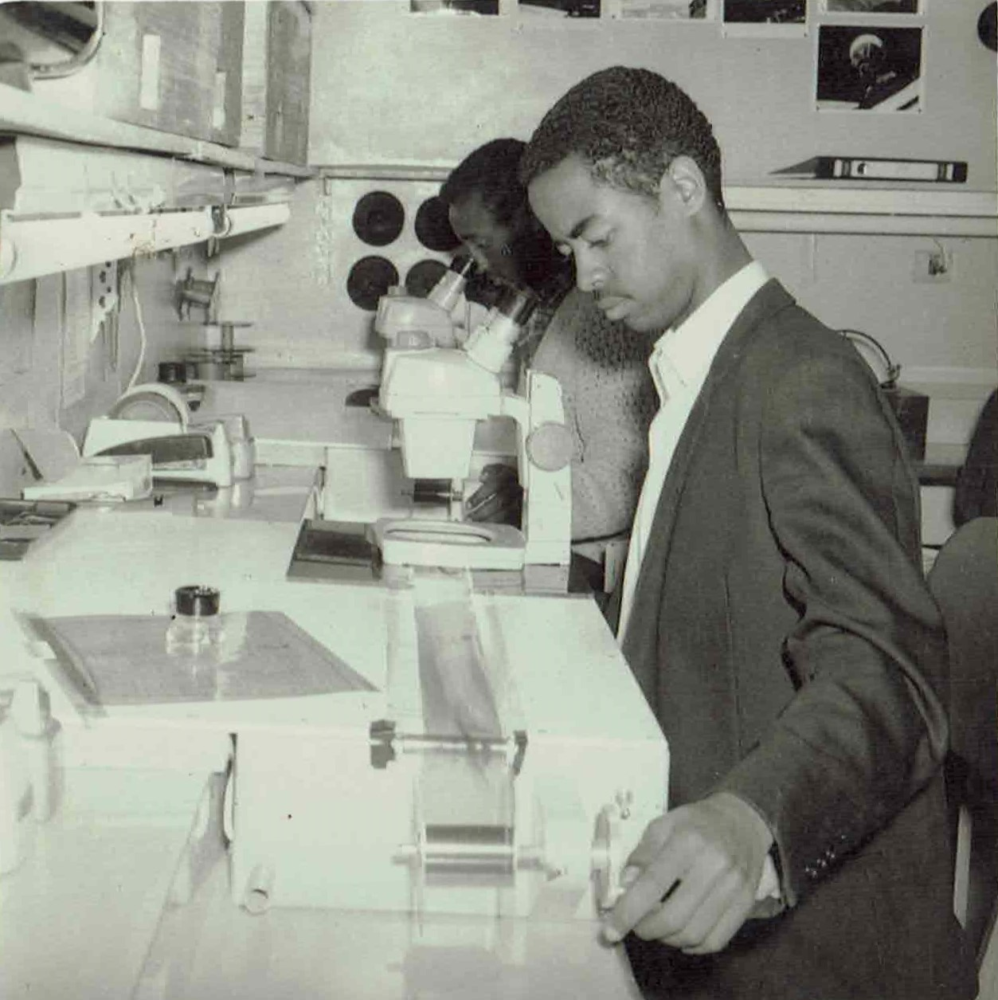
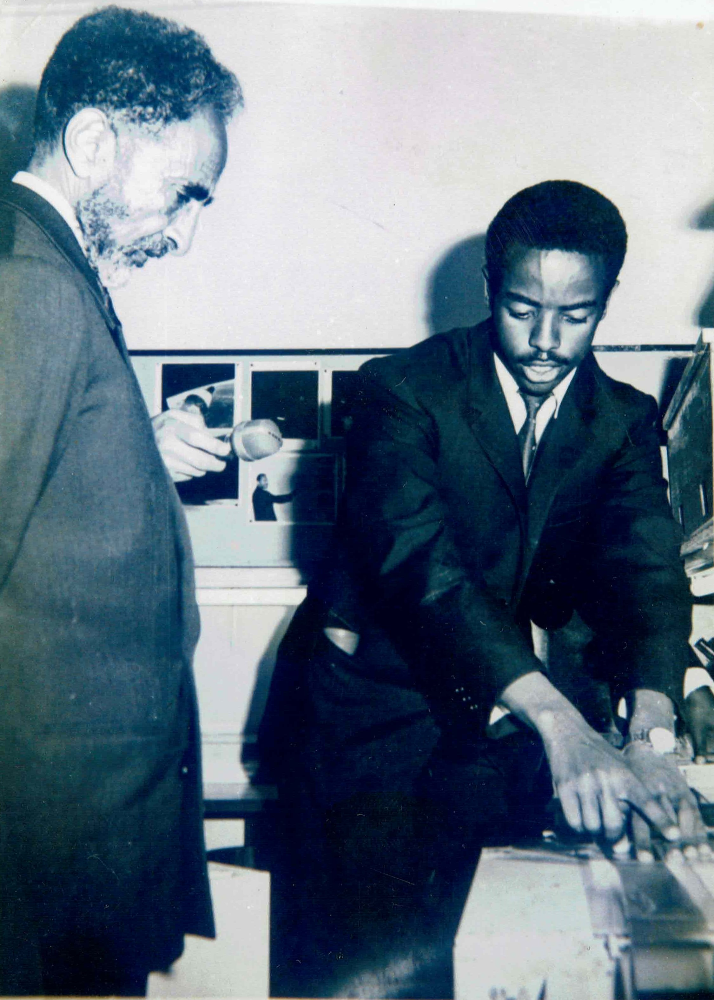

Who is Tafesse Muluneh
Early Life
Tafesse grew up in the outskirts of the capital Addis Ababa, 24 miles west of the capital in a small town named by just a number, 44. He went to Debre Birhan (100 miles away from home) for high-school.
In his college years
Addis Ababa Univerisity
When the time came to join college Tafesse had the opportunity to enter into the then prestigious campus - the Addis Ababa University (4-Killo Campus). He finished his bachelors degree program in 07/1966.
He went on to work for Smithsonian Astrophysical Observatory in Debre-zeyt for two years before he went on pursuing his post-graduate program in England in 1968.
Below: Tafesse getting his work done at the Smithsonian Observatory

Research and Publications
Smithsonian Astrophysical Observatory
The Smithsonian Astrophysical Observatory was a space research facility located in Debre-Zeyt that was opened in the same year when Tafesse completed his bachelor's degree. The institute was established and funded by the USA aimed at pioneering space research.
The experience and knowledge he gained in the institution helped set the ground for becoming the person he is today, notably publishing books on the topic of space science.
Below: Tafesse showcasing the achievements of the observatory to H.E. Haile Selassie of Ethiopia during his first visit to the facility.

Ethiopia
Ethiopian Authority for Standardization
Returning from his postgraduate studies, he joined the Science Faculty to teach physics. He was asked and accepted the job of part-time teaching the course to cadets at the air force base in Debre-zeit for a semester.
Later he joined the staff of Pathobiology Institute in helping research and at the same time delivering physics classes to Building college students.
It
was at this institute that he established a Radiation.
Protection laboratory service whose primary responsibility
was to monitor X-ray radiation exposure to all lab
technicians who work around the various hospitals in
Ethiopia. This was a pioneering move for a country that
never had radiation control protocols in practice.
He then moved to join the Ethiopian Standards Institute as General Standards engineer. It was later upgraded to the status of Authority; and Tafesse advanced to Division Head of Engineering Standards, and later to Department Head of the newly created Metrology Center under the Authority.
He retired shortly after serving as General Manager of the Authority in 1996. Two years later, he moved to USA where he now resides.
Subscribe
Want to keep in touch with the latest updates on this site? We hope you do! Leave us your name and email below and we will keep you informed.